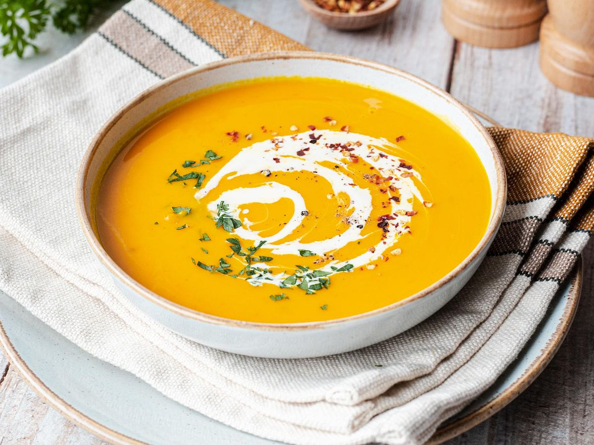

Zutaten:
- 600 g
- 3
- 0,5 Liter
- 300 ml
- Kürbis
- Kartoffeln
- Gemüsebrühe
- Sahne
- Salz
- Pfeffer
- Muskatnuss
- Petersilie
Zubereitung:
- Den Kürbis und 3 Kartoffeln schälen und in Würfel schneiden.
- Kürbis und Kartoffeln knapp mit Gemüsebrühe bedecken und 20 Minuten kochen.
- Suppe pürieren und Sahne hinzufügen.
- Mit Salz, Pfeffer, Muskatnuss und Petersilie abschmecken.